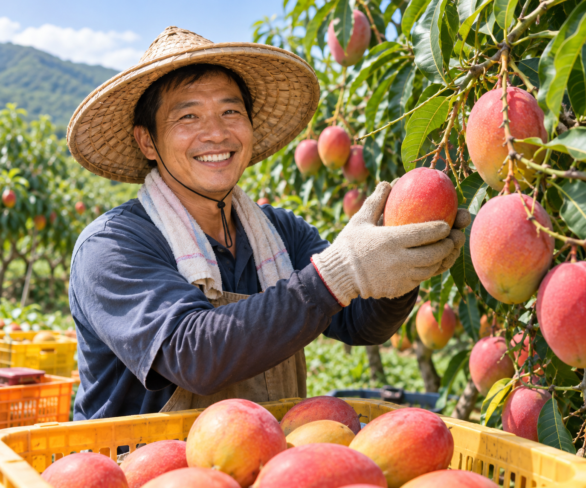

陳天賜
等一顆芒果熟透的耐心
玉井被稱為「芒果的故鄉」，陳天賜的果園就在山腳下那片緩坡上。他是第三代芒果農，從祖父那一輩開始種植愛文芒果，如今家中三公頃的果園裡，還留著幾棵超過五十年的老樹。他說，老樹的產量不高，果實卻特別香濃，是整座果園的精神象徵，每年採收前他總會先去老樹下站一會兒，像是和長輩打聲招呼。
愛文芒果要種得好，第一關是修枝。每年採收結束，他會把過密的枝條剪掉，讓陽光能穿透樹冠，也讓空氣在枝葉間流通，減少病蟲害的機會。接著是十一月到十二月的催花期，他不靠強烈的藥劑，而是控制水分、適度斷根，讓樹木誤以為進入乾季，自然萌發花芽。水給多了只長葉不開花，水給少了又傷樹，這個拿捏全靠幾十年累積的手感。
開花之後才是最緊張的階段。芒果花期最怕寒流與連日大雨，一旦遇上就會大量落花。陳天賜每天清晨巡園，記錄溫度與濕度，必要時用防風網與疏花技術保護花序。結果之後，他會逐顆為果實套上紙袋，不只防止果蠅與炭疽病，也讓果皮能均勻轉紅。三公頃的果園，每一顆都是他和家人一個一個親手套上去的，耗工卻無可取代。
土壤是陳天賜最看重的資產。每年採收後，他會把修剪下來的枝葉粉碎，混合牛糞與稻殼堆肥，再均勻鋪回樹根周圍。這些有機質在雨季分解，讓土壤越來越鬆軟，樹根也能往更深處延伸。他說，肥料只是讓樹吃飽，真正讓樹健康的，是土裡看不見的微生物，那才是果園的地下城市。
他也很早就開始記錄果園的數據。每一棵樹的花期、結果數與單果重，他都寫在筆記本裡，十幾年下來，寫滿了十多本。當年輕人問他種芒果的秘訣，他總是翻開這些泛黃的筆記說：「沒有秘訣，只是把一年一年的天氣，都老老實實地記下來。」
採收時，他不看日曆，而是看果肩的飽滿度、果粉的變化，再用手感判斷成熟度。剛採下的芒果並不急著出貨，會先靜置後熟，讓澱粉慢慢轉化成糖分，才送到消費者手上。他常說，好芒果不是搶時間，而是等時間。這份耐心，讓他的愛文芒果每年都有一批老顧客，一到夏天就會主動打電話來預訂。
對陳天賜來說，種芒果最大的快樂，是看見客人收到箱子、打開那一刻的表情。他常收到顧客寄來的照片，有人把芒果切成漂亮的格子，有人做成冰沙與布丁。每一張照片，他都會洗出來貼在果園的工具房牆上，那面牆如今已經快貼滿了，是他最珍貴的收成紀錄。